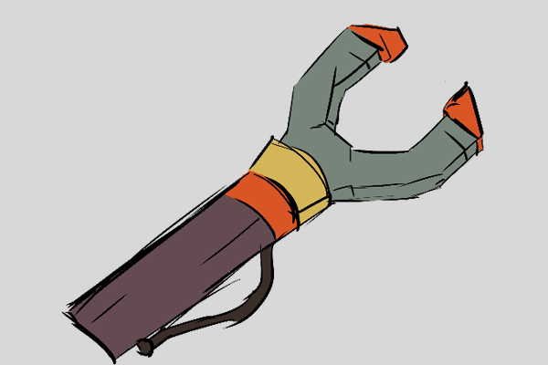

Gripper
A mechanical device that mimics a human hand. It allows a machine to interact with the world around it just like a human could.
A mechanical device that mimics a human hand. It allows a machine to interact with the world around it just like a human could.

A machine that has the same general design and body type as a human. The majority of science fiction robots are humanoid in shape.

A robot that is interactive is programmed to be able to communicate with humans or other machines. Many robots are being created especially to interact with humans and understand emotions.

These allow an appendage to bend, just like a human joint allows an arm to bend. Many robots have a large amount of joints to allow a full range of motion.

The study of movement. In robotics, movement is usually a required function of a robot, and kinematic researchers develop ways to more naturally create movement.